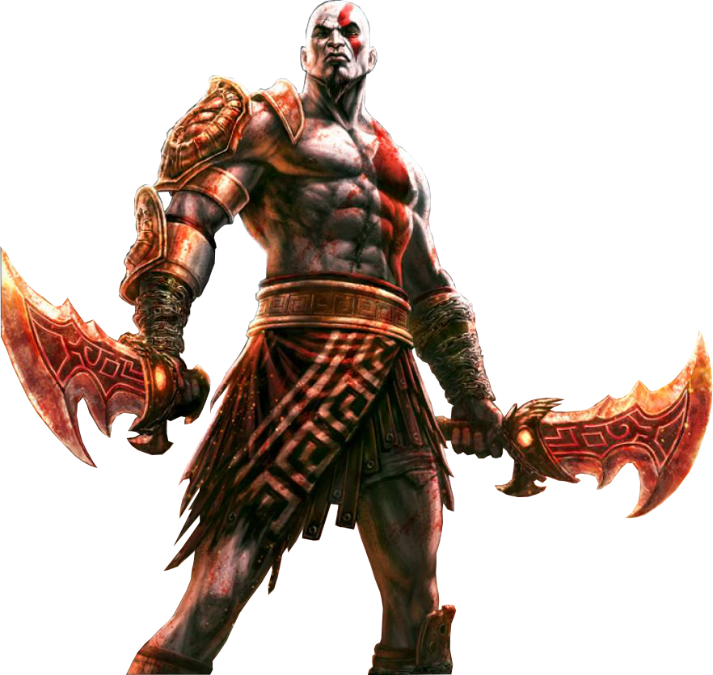
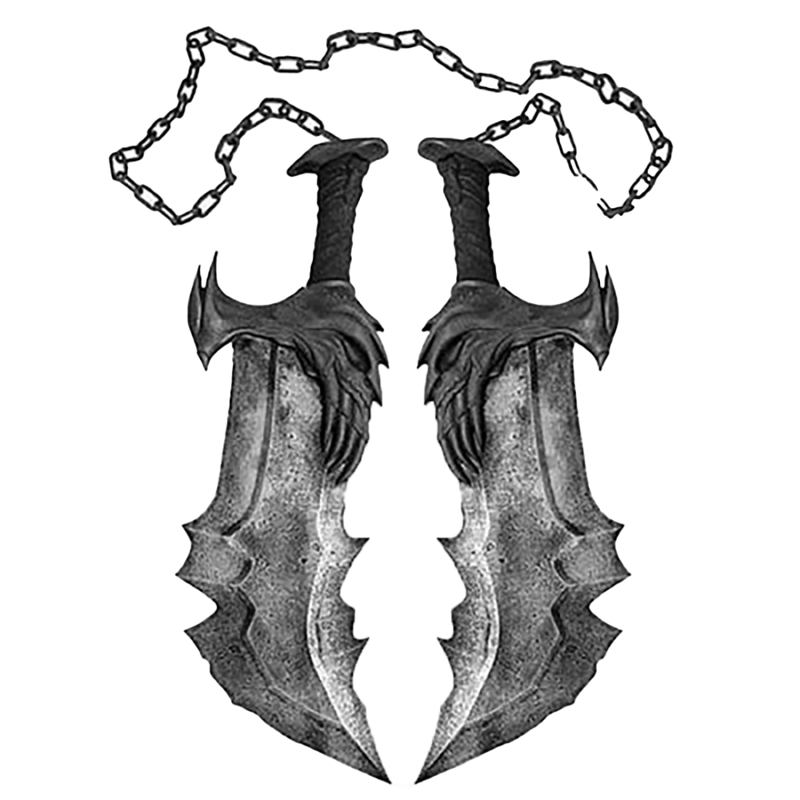

Datos curiosos
GOD OF WAR
EVOLUCIÓN DEL PERSONAJE
Kratos pasa por cuatro etapas fundamentales:
- Guerrero espartano lleno de disciplina
- Sirviente de Ares manipulado por los dioses
- Dios de la guerra consumido por la ira
- Destructor del Olimpo guiado por la venganza
Su evolución muestra cómo el dolor puede destruir la identidad de una persona hasta convertirla en algo irreconocible.

ARMAS Y DIOSES
Armas:
- Espadas del Caos
- Hoja del Olimpo
- Martillo del barbaro
- Lanza del destino
- Espadas de Atenea
- Espadas del exilio
- Arco de Apolo
- Garras de hades
- Cestus de Nemea
- Latigo de Némesis
Dioses Encontrados:
- Afrodita
- Ares
- Atenea
- Hades
- Hefesto
- Helios
- Hera
- Hermes
- Poseidon
- Zeus

CURIOSIDADES
Kratos lleva las cenizas de su familia incrustadas en su piel como castigo eterno.
Es conocido como el “Fantasma de Esparta” debido a su apariencia y pasado.
La saga está inspirada en tragedias griegas clásicas donde los dioses manipulan el destino humano.
Cada dios que muere en la historia afecta directamente el equilibrio del mundo.
Descargar revista en PDF